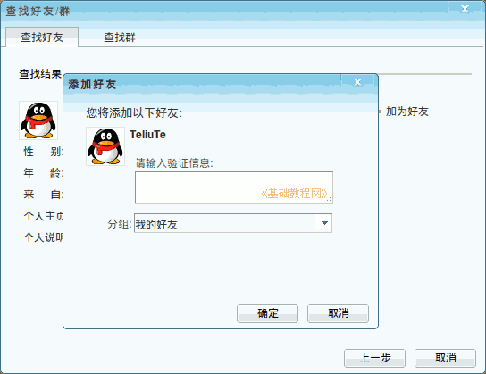

2011-2012 第一学期七年级电脑操作教学设计
作者：TeliuTe 来源：基础教程网
二十七、学会即时通讯工具 返回目录 下一课
（一）教学设计
1、学习目标：学会即时通讯工具
2、注意事项：如果webqq面板下边没有放大镜查找图标，点上边好友旁边的下拉按钮
3、教学过程：
1）教师准备学案和板书；
2）学生整队进入，开机抄黑板上笔记；
3）教师讲解板书演示操作；
4）学生打指法、日志、完成操作；
5）教师打勾记录学生指法成绩，检查日志和操作；
注：学生抄完笔记就开始打指法、日志，老师讲完后再继续完成；
（二）板书设计(学生笔记)
第27课 学会即时通讯工具
1、包括腾讯QQ 谷歌GTlk MSN
2、功能发送消息，传送文件，远程协助。
3、使用:申请帐号 zc.qq.com
4、查找好友，验证，隐身，系统设置。
5、群功能，群主，管理员，成员。
6、加好友(QQ号)，名字验证。
操作图示：

（三）课后记 2012-12-14 17:53
--
昨天上了一节，今天上午又一个班
没什么难度，就是太罗嗦了点，不用说那么多，让学生自己去做就是了
--
先讲这个还是先讲邮件呢，没号的要注册一个，提示要手机，不知是不是过代理的缘故
注册 163 也是卡着过不去，之前有QQ注册成功的，或许是哪儿操作不对
--
把归类的思想，三个标签都说得好，老师过来检查打勾即可
把字体字号颜色信纸都加好，操作放另一个标签，添加好友的准备上
--
准备 一把尺子，学习不认真的棍子准备着，敲一下都记着了
若是记不住 只好再提醒了，也顾不了那么多
--
学生都说会，可能是简单了些，其实除了聊天也会不了多少
把思想端正，用在学习上就是好的，别加错好友害了一辈子
--
容易忘记密码的，用得帮着记一下，给个简单的密码
要不下次又忘记了，耽误许多的时间，或者让抄到本子上，可是本子又容易丢
--
网页QQ下边按钮有时看不到，点列表上边一个小黑三角下拉按钮里有
返回目录 下一课
本教程由86团学校TeliuTe制作|著作权所有
基础教程网：http://teliute.org/
美丽的校园……
转载和引用本站内容，请保留作者和本站链接。